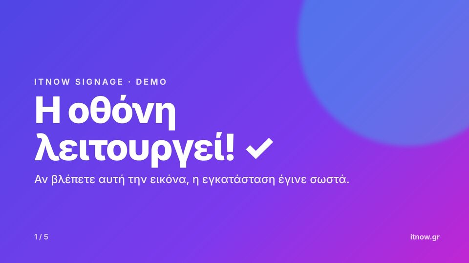
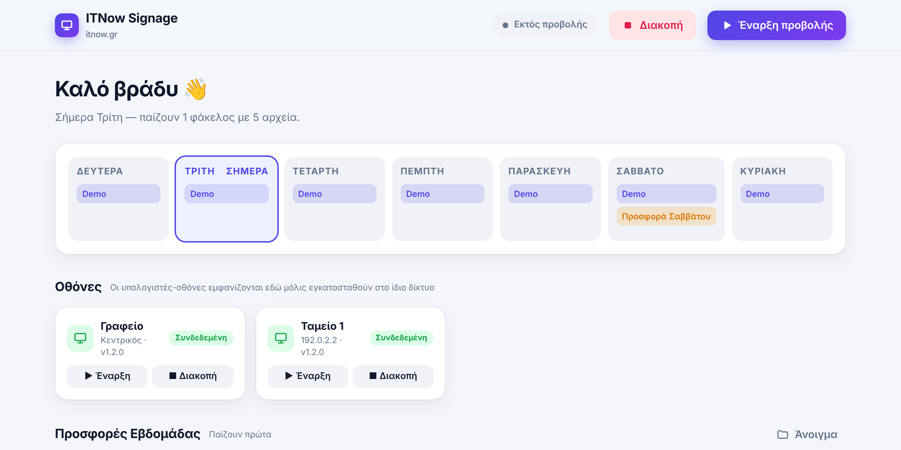
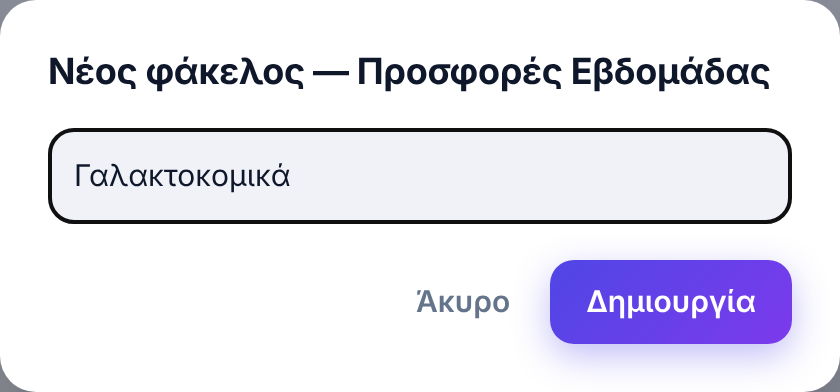
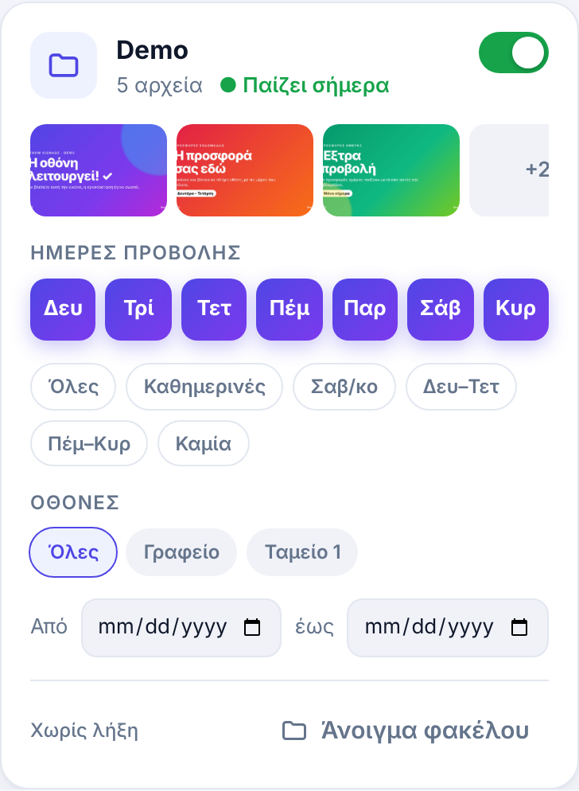
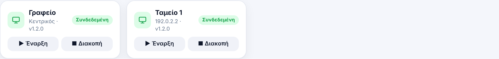
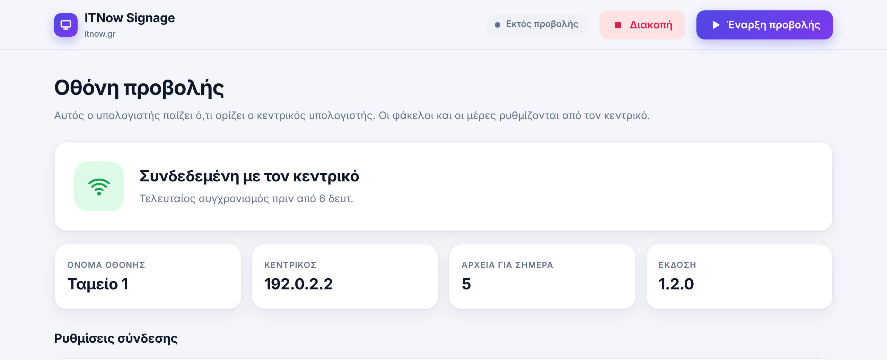

Προβολή προσφορών σε οθόνες του καταστήματος. Σε αυτές τις σελίδες θα βρείτε όσα χρειάζεστε για την καθημερινή χρήση.

Το ITNow Signage παίζει εικόνες και βίντεο σε πλήρη οθόνη στις οθόνες του καταστήματος, με ωραία εφέ ανάμεσά τους. Εσείς απλά βάζετε τα αρχεία σε φακέλους και διαλέγετε ποιες μέρες θα παίζει ο καθένας.
| Κεντρικός υπολογιστής | Ο υπολογιστής όπου βάζετε τις προσφορές και δίνετε εντολές. Συνήθως ο υπολογιστής του γραφείου. |
| Οθόνες | Οι υπολογιστές που είναι συνδεδεμένοι στις τηλεοράσεις/οθόνες του καταστήματος. Παίζουν μόνες τους ό,τι ορίσατε στον κεντρικό. |
| Προσφορές Εβδομάδας | Παίζουν πρώτες. |
| Προσφορές Ημέρας | Παίζουν έξτρα, μετά από αυτές της εβδομάδας. Και μετά ξανά από την αρχή. |
Στον κεντρικό υπολογιστή, κάντε διπλό κλικ στο εικονίδιο ITNow Signage της επιφάνειας εργασίας. Ανοίγει ο Πίνακας Ελέγχου:

Πάνω δεξιά: τα κουμπιά Έναρξη προβολής και Διακοπή για αυτόν τον υπολογιστή. Από κάτω, το ημερολόγιο της εβδομάδας δείχνει με μια ματιά τι παίζει κάθε μέρα — η σημερινή μέρα είναι πλαισιωμένη.

Όλοι οι φάκελοι βρίσκονται επίσης στο C:\ITNow-Signage — υπάρχει και εικονίδιο ITNow Signage - Φάκελος Προσφορών στην επιφάνεια εργασίας.

Πατήστε τις μέρες που θέλετε να παίζει ο φάκελος. Οι μωβ είναι ενεργές. Πιο γρήγορα: τα κουμπάκια Όλες, Καθημερινές, Σαβ/κο, Δευ–Τετ, Πέμ–Κυρ.
Όλες = παίζει σε κάθε οθόνη. Ή διαλέξτε συγκεκριμένες, π.χ. μόνο «Ταμείο 1».
Για προσφορά με ημερομηνία λήξης: μετά την ημερομηνία «Έως» σταματά να παίζει μόνη της.
Πράσινος = ενεργός. Κλείστε τον για να σταματήσει προσωρινά ο φάκελος χωρίς να σβήσετε τίποτα.
Η ένδειξη ● Παίζει σήμερα επιβεβαιώνει ότι ο φάκελος είναι στη σημερινή προβολή.
Στην ενότητα Οθόνες του Πίνακα Ελέγχου βλέπετε όλους τους υπολογιστές-οθόνες:

| Συνδεδεμένη | Η οθόνη επικοινωνεί κανονικά με τον κεντρικό. |
| Παίζει | Η οθόνη δείχνει τώρα τις προσφορές. |
| Εκτός σύνδεσης | Η οθόνη είναι κλειστή ή χωρίς δίκτυο. Αν ήταν ήδη σε λειτουργία, συνεχίζει να παίζει τις τελευταίες προσφορές που είχε πάρει. |
Με ▶ Έναρξη και ■ Διακοπή ξεκινάτε ή σταματάτε την προβολή σε κάθε οθόνη από μακριά (η εντολή φτάνει σε λίγα δευτερόλεπτα).
Το εικονίδιο ITNow Signage δείχνει αν η οθόνη είναι συνδεδεμένη. Εκεί αλλάζετε και το όνομά της (π.χ. «Ταμείο 1», «Βιτρίνα»).

Με την εγκατάσταση υπάρχει έτοιμος ο φάκελος Demo με 5 εικόνες, για να δείτε αμέσως ότι όλες οι οθόνες παίζουν. Όταν βάλετε τις δικές σας προσφορές, κλείστε τον διακόπτη στην κάρτα «Demo» (ή σβήστε τον φάκελο).
| Τι αρχεία μπαίνουν; | Εικόνες JPG, PNG, GIF, WEBP και βίντεο MP4. |
| Ιδανικό μέγεθος | 1920 × 1080 (οριζόντια), όπως μια τηλεόραση. Άλλα μεγέθη χωράνε κι αυτά, με μαύρα περιθώρια. |
| Σειρά προβολής | Αλφαβητική. Για δική σας σειρά, βάλτε αριθμό μπροστά: 01_γάλα.jpg, 02_τυρί.jpg… |
| Πόση ώρα μένει κάθε εικόνα; | Στο τέλος του Πίνακα Ελέγχου → Ρυθμίσεις προβολής: χρόνος, εφέ, ταχύτητα εφέ και ήχος βίντεο. Τα βίντεο παίζουν μέχρι το τέλος τους. |
| Πότε φαίνονται οι αλλαγές; | Από τον επόμενο γύρο της προβολής — δεν χρειάζεται επανεκκίνηση. |
| Έξοδος από την πλήρη οθόνη | Πατήστε Alt + F4, ή Διακοπή από τον Πίνακα Ελέγχου. |
Κανένας φάκελος δεν έχει τη σημερινή μέρα επιλεγμένη, ή οι φάκελοι είναι άδειοι / απενεργοποιημένοι. Ελέγξτε το ημερολόγιο της εβδομάδας στον Πίνακα Ελέγχου.
Βεβαιωθείτε ότι ο υπολογιστής της είναι ανοιχτός και στο ίδιο δίκτυο με τον κεντρικό. Μόλις ανοίξει, συνδέεται μόνη της.
Οι οθόνες ενημερώνονται κάθε λίγα δευτερόλεπτα· μεγάλα βίντεο θέλουν λίγο χρόνο να μεταφερθούν. Ελέγξτε επίσης ότι ο φάκελος έχει τη σημερινή μέρα και τη σωστή οθόνη.
Ανοίξτε το ITNow Signage και πατήστε Έναρξη προβολής. Με το επόμενο άνοιγμα του υπολογιστή ξεκινά ούτως ή άλλως μόνη της.
Για υποστήριξη επικοινωνήστε με τον τεχνικό σας · itnow.gr